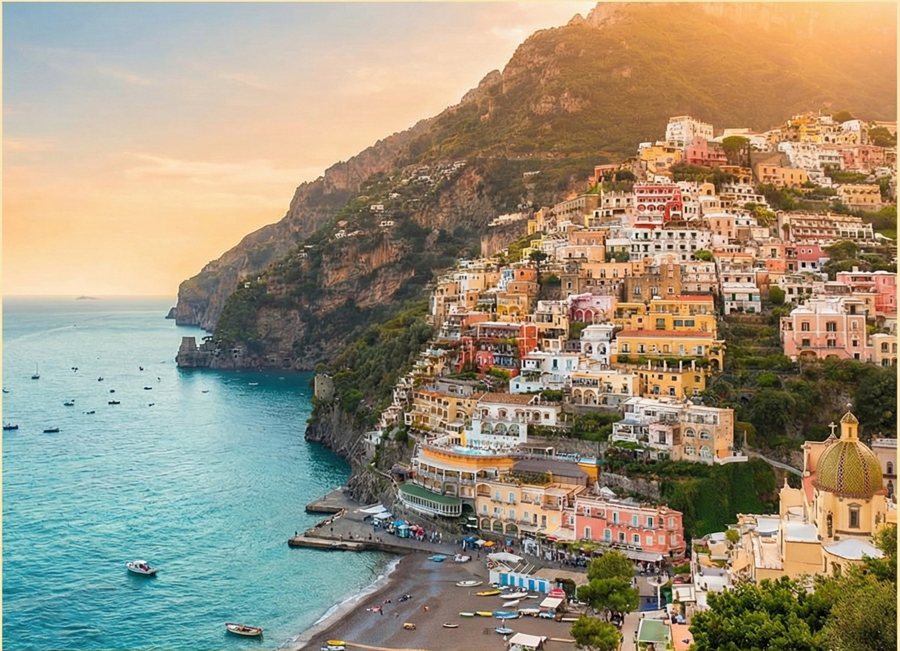
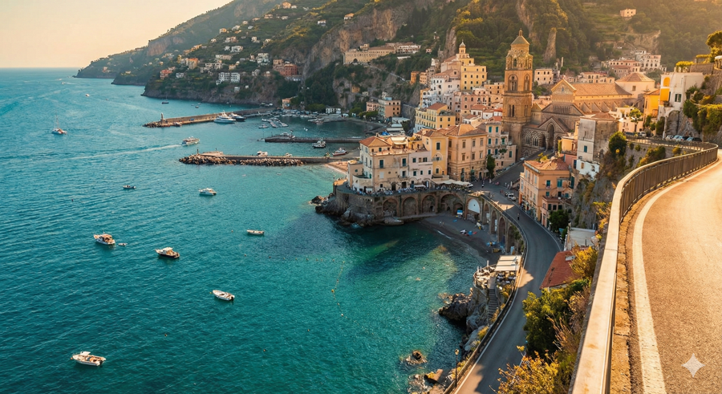
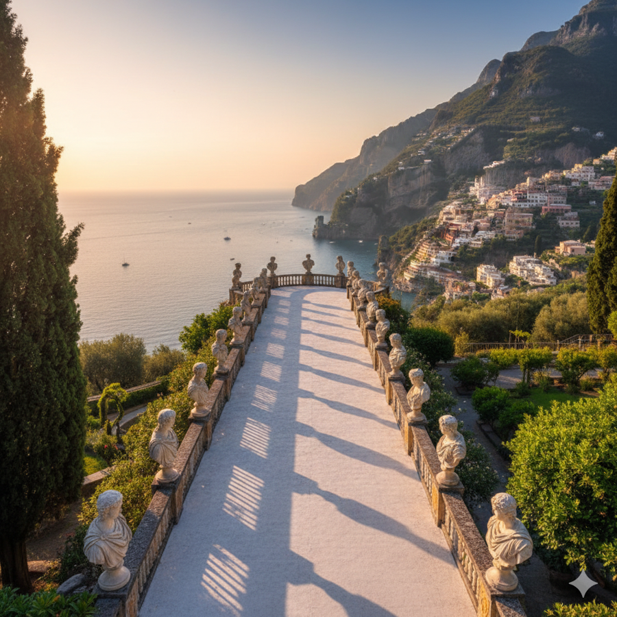

🍋 Amalfi Coast ItineraryA simple 3-day travel plan along the Amalfi Coast. By Joud Hariri Beach ambience: |
Day 1 — Positano ☀️ MorningBreakfast : Collina Postino Bakery
AfternoonLunch : Da Adolfo | Ristorante Max
EveningSunset Boat Ride : Positano pier
Tips & TransportTransport within Positano : Walkable, lots of stairs
|
Day 2 — Amalfi & Atrani 🌊 MorningBreakfast : Pasticceria Andrea Pansa
AfternoonScenic Coastal Walk : Walk to Atrani Via Lorenzo d’Amalfi
EveningSeafront Stroll : Marina di Amalfi
Tips & TransportWalk between Amalfi & Atrani (5–10 min)
|
Day 3 — Ravello 🌿 MorningBreakfast : Duomo Caffè | Villa Maria
AfternoonLunch at Terrace Café : Caffè Duomo | Villa Maria Restaurant
EveningTerrace of Infinity : Villa Cimbrone
Tips & TransportRavello is a small, walkable hilltop town
|